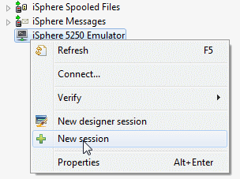
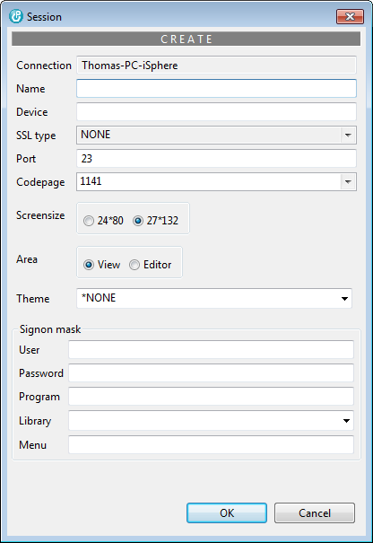
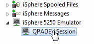
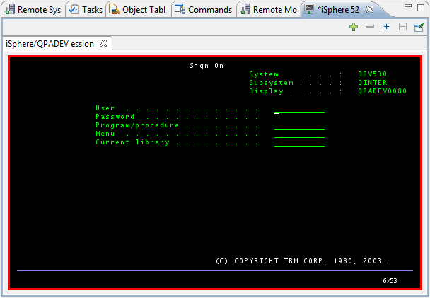
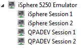
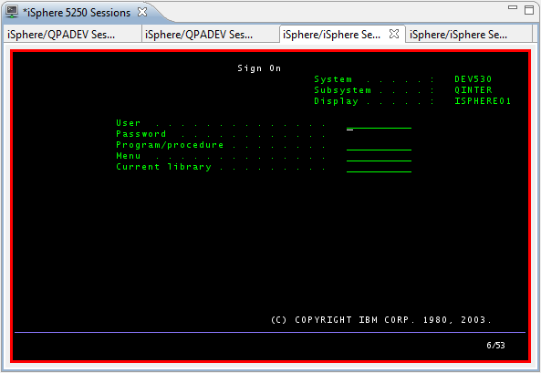
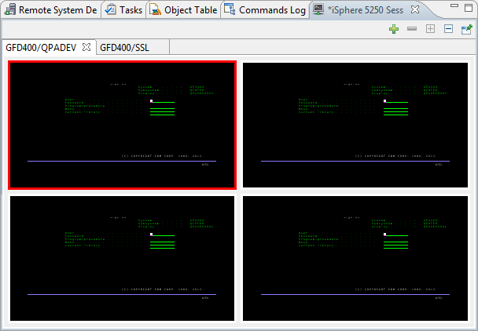
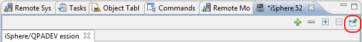
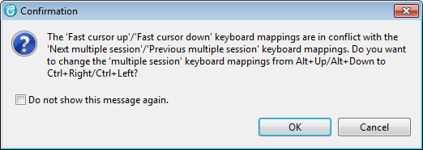
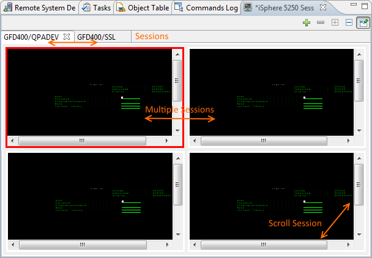

Right-click the "iSphere 5250 Emulator" node of the Remote Systems view and select "New session".

Specify the required session properties and click [OK] to create a new session entry:

| Name | - | The name of your session and which is displayed under "iSphere 5250 Emulator". | |||||||||
| Device | - | The device name of your session on your host. Leave the device name blank for QPADEV* sessions and enter a device name for named sessions. | |||||||||
| SSL type | - | Specifies the SSL protocol.
|
|||||||||
| Port | - | The Telnet port number of your host. The Telnet port is used for connecting a 5250 session. | |||||||||
| Codepage | - | The codepage number of your 5250 session. | |||||||||
| Area | - | Specifies the area where to create the 5250 window. The window can be created as an editor in the Eclipse editor area or as a view. | |||||||||
| Theme | - | Specifies the name of a theme. The theme overrides the default TN5250J color attributes. Use a theme to define different color themes for your 5250 sessions. A theme can be reused between your sessions. | |||||||||
| User | - | Specifies the name of the user profile that is signed on to the host. (Depends on: QRMTSIGN) | |||||||||
| Password | - | Specifies the password that is used for signing on to the host. (Depends on: QRMTSIGN) | |||||||||
| Program | - | Specifies the name of the program that is called after the user has been signed on to the system. (See: user profile parameter INLPGM) | |||||||||
| Library | - | Specifies the name of the library that is searched for the program that is called after the user has been signed on. Use special value %ISPHERE% for the current iSphere library name of the connection. (See: user profile parameter INLPGM) | |||||||||
| Menu | - | Specifies the name of the initial menu that is displayed after the user has been signed on to the system. (See: user profile parameter INLPGM) |
Double click a session entry to start a new session:

The following session has been created as a view. It is displayed below the editor area:

You need to create a 5250 session entry for each session that you want to run in the editor area. The following example shows 4 session entries. The first two entries are named sessions, whereas the last two entries are QPADEV* sessions.

With that configuration you can start two QPADEV* sessions like that:
Or you can start named sessions ISPHERE* as shown below:

| Editor sessions are more flexible, because you can configure their names and you can start as much sessions as you want. |
You can add up to 3 additional sessions with the little plus button at the top right corner of the view.
Today, multiple sessions work only for QPADEV sessions. Therefore you need to leave the session name empty, when you want to use multiple sessions.

To switch between the sessions click the desired session window or press "Alt-Arrow Up" to select the next session or "Alt-Arrow Down" to select the previous session.
To close a session click on the little minus icon next to the plus icon. The current session will be closed.
| Starting iSphere 3.0.6.r you can change these key bindings. Open the context menu of an TN5250 session and select Map keys... to change or check the actual mappings. |
| The advantage of view sessions over editor sessions is that you can view up to four sessions at once. |
Session started in a view can be pinned. Pinned sessions are restored when RDi is closed and restarted.

| Please notice that new sessions are still opened in a pinned session, which is a bit different from the standard behavior of Eclipse. For 5250 sessions "pin" actually means "restore on restart". |
iSphere adds special keys to the TN5250j keyboard mapping that allow you to switch between your 5250 sessions. The following keys are available:
| Action | New Mapping | Old Mapping | |
|---|---|---|---|
| Session, Next | : | Ctrl+Up | |
| Session, Previous | : | Ctrl+Down | |
| Multiple Session, Next | : | Ctrl+Left | Alt+Up |
| Multiple Session, Previous | : | Ctrl+Right | Alt+Down |
| Scroll Session Up | : | Ctrl+Alt+Up | |
| Scroll Session Down | : | Ctrl+Alt+Down | |
| Scroll Session Left | : | Ctrl+Alt+Left | |
| Scroll Session Right | : | Ctrl+Alt+Right |
When iSphere has to create a new "keymap" file, it uses the new mapping. When it has to add the mappings to an existing file, it uses the old mapping. It displays the following warning dialog, in case there is a conflict with the Fast Cursor Up/Down keys which are often mapped to Alt+Up and Alt+Down:

Here is a chart, showing the keys and actions. The example uses a minimal session size of 300 by 220 pixels to enforce the horizontal and vertical scroll bars:

By default the Eclipse key bindings are disabled where the focus is on a 5250 session. Therefore you cannot for example use Ctrl+F7 to switch between views or Ctrl+F8 to select another perspective. However you can use Ctrl+F12 to enable or disable the Eclipse key binding.
So if you want to use Ctrl+F8 to select another perspective, you first need to press Crtl+F12 to enable the Eclipse key binding. The press Ctrl+F8 for changing the perspective.